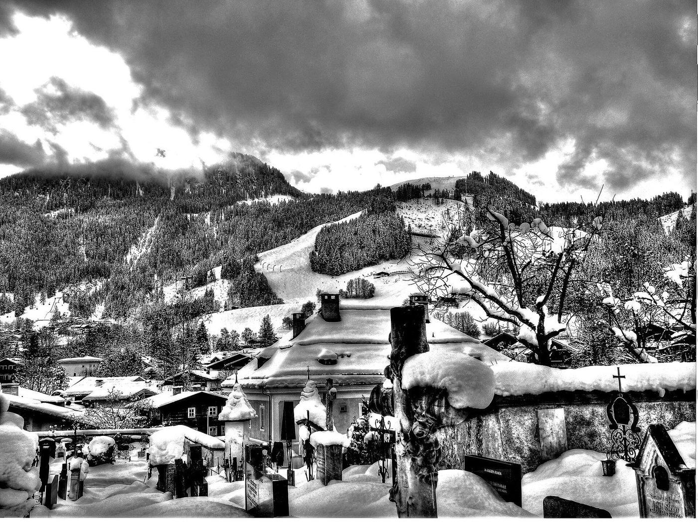

Sports · Other Sports
Hahnenkamm Races Kitzbühel 2027
- Dates
- –
- Venue
- Streif / Ganslern, Kitzbuhel
- Location
- Kitzbühel, Austria
- Format
- In-person
- Category
- Other Sports
- Industry
- Alpine skiing
- Organiser
- Kitzbuhel Ski Club
- Official website
- https://hahnenkamm.com/en/
About
Dates are the official published race week of 18-24 January 2027 on the Streif (downhill / Super-G) and Ganslern (slalom) in Kitzbuhel.
Topics: alpine skiing, Hahnenkamm, FIS World Cup.
No organiser attendance figure found on the official pages fetched 24 Nov 2026 for this upcoming edition. Ranked by our estimated size tier 'large' (30,000-100,000 attendees/visits), a judgement from format, venue and scale, not an official number.
Sources
- Official — https://hahnenkamm.com/en/